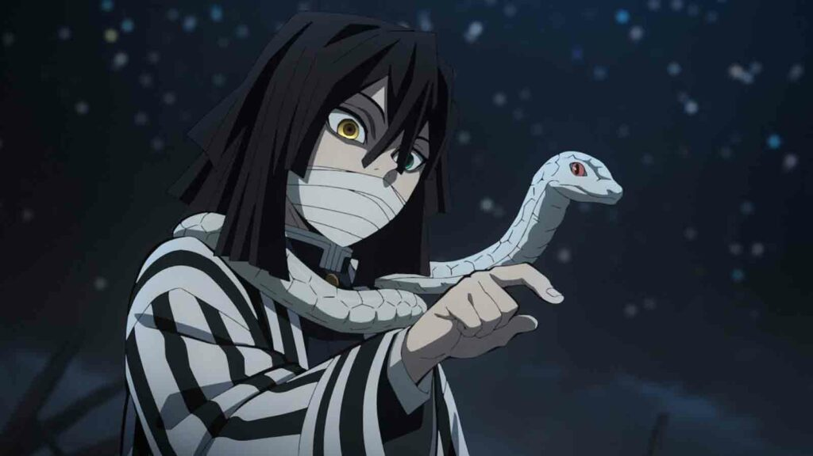
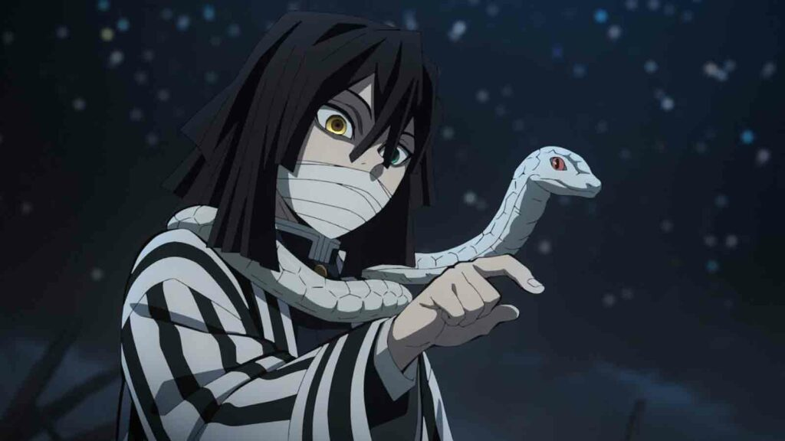

Demon Slayer

Koyoharu Gotouge
Koyoharu Gotouge (Japanese: 吾峠 呼世晴, Hepburn: Gotōge Koyoharu, born May 5, 1989) is a Japanese manga artist, known for the manga series Demon Slayer: Kimetsu no Yaiba (2016–2020). By February 2021, the manga had over 150 million copies in circulation (including digital copies), making it one of the best-selling manga series of all time
character

Tanjiro Kamado
Tanjiro Kamado (竈門かまど 炭たん治じ郎ろう) is the main protagonist of Demon Slayer: Kimetsu no Yaiba. He is a Demon Slayer in the Demon Slayer Corps, who joined to find a remedy to turn his sister, Nezuko Kamado, back into a human and to hunt down and kill demons, and later swore to defeat Muzan Kibutsuji, the King of Demons, in order to prevent others from suffering the same fate as him
Nezuko Kamado
Nezuko Kamado (竈門かまど 禰ね豆ず子こ Kamado Nezuko) is the deuteragonist of Demon Slayer: Kimetsu no Yaiba. She is a demon and the younger sister of Tanjiro Kamado and one of the two remaining members of the Kamado family. Formerly a human, she was attacked and transformed into a demon by Muzan Kibutsuji.
Zenitsu Agatsuma
Zenitsu Agatsuma (我あが妻つま 善ぜん逸いつ Agatsuma Zen'itsu?) is one of the main characters of Demon Slayer: Kimetsu no Yaiba and along with Inosuke Hashibira, a travelling companion of Tanjiro Kamado and Nezuko Kamado. He is also a Demon Slayer in the Demon Slayer Corps
Inosuke Hashibira
Inosuke Hashibira (嘴はし平びら 伊い之の助すけ Hashibira Inosuke) is one of the main characters of Demon Slayer: Kimetsu no Yaiba and along with Zenitsu Agatsuma, a traveling companion of Tanjiro Kamado and Nezuko Kamado. He is also a Demon Slayer in the Demon Slayer Corps
Muzan Kibutsuji
Muzan Kibutsuji (鬼き舞ぶ辻つじ 無む惨ざん Kibutsuji Muzan) is the main antagonist of Demon Slayer: Kimetsu no Yaiba. He is the Demon King, the first of his kind, and the progenitor of all other demons in existence

Yoriichi Tsugikuni
Yoriichi Tsugikuni (継つぎ国くに 縁より壱いち Tsugikuni Yoriichi?) is a major recurring character in Demon Slayer: Kimetsu no Yaiba. He is a Demon Slayer who lived nearly 500 years ago during the Sengoku era.[2] He was the most powerful Demon Slayer to have ever existed
Hashira

 

kizuki